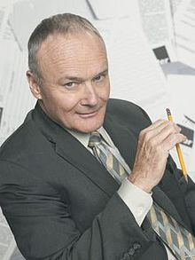

About Markus
I generally tell people I am too busy to tell them about myself and to just go read the wikipedia article for Creed Bratton and assume that is fairly accurate. But, if you must know more, I am a Baltimore native who lives in Fells Point and works at Johns Hopkins University. I prefer to spend a bulk of my time yelling at the TV, especially during Ravens games, The Walking Dead and Game of Thrones. I also frequent Las Vegas as rate suggestive of heavy mob ties but actually just have an obscene amount of air miles from my previous job that will eventually expire.